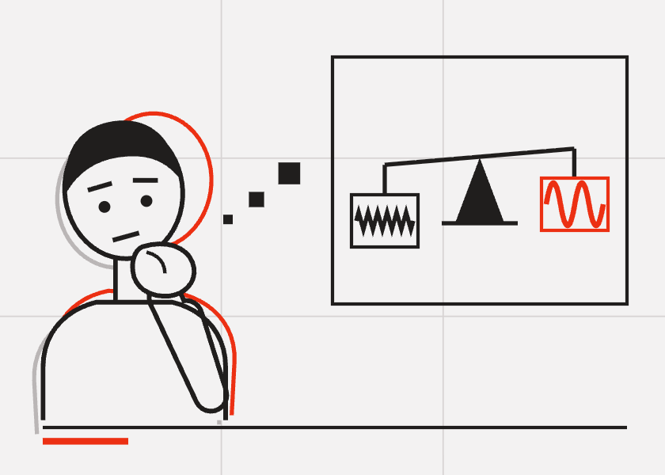
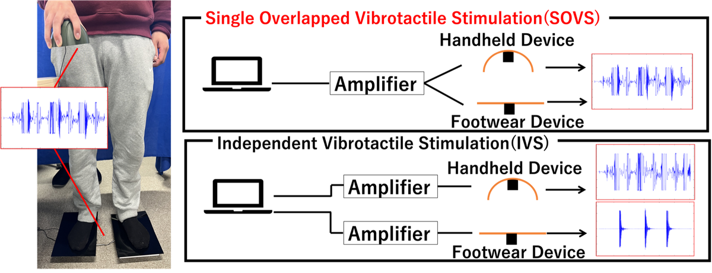
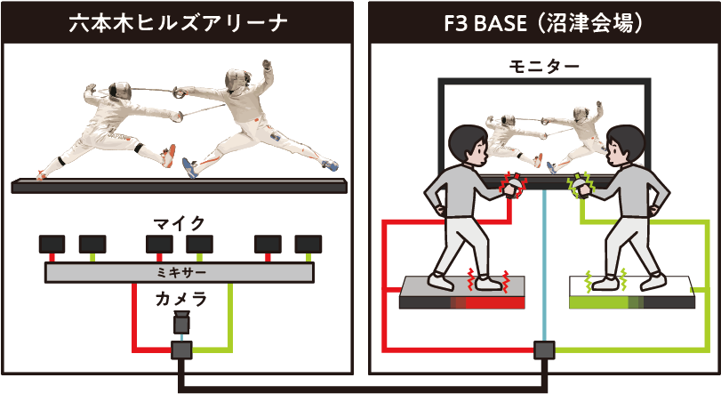
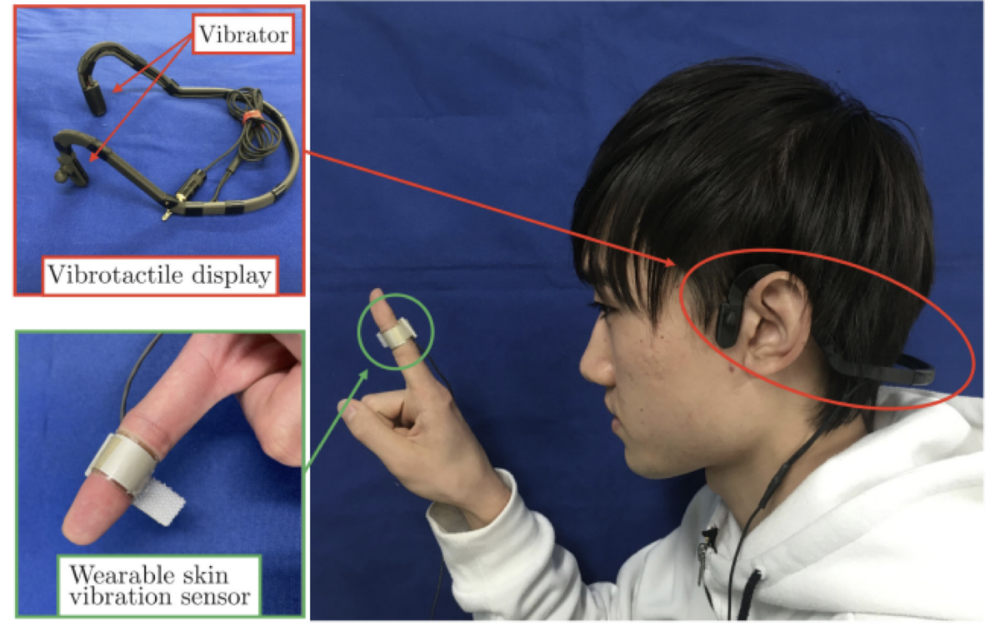

{{ project.kicker }} · {{ project.year }}
{{ project.title }}
{{ project.blurb }}
{{ para }}
{{ project.imageNote }}
Doctoral Student, Nagoya Institute of Technology
Studying how the body perceives vibration and touch — vibrotactile perception, haptics, and multisensory experience.

Psychophysics · 2024–
Amplitude is not directly linked to intensity. A series of studies on how temporal factors such as, duration, damping and phase spectra change how strong a vibration feels.

Whole-body haptics · 2022–
An overlapped vibration signal composing different information is delivered to several body sites at once. In the pseudo-dribbling case it makes you feel a ball that isn't there — and the same principle is where the work continues.

Remote sports viewing · 2021
Third-person video, the spectator's own imitative movement, and vibration at several body sites — so a remote fencing spectator perceives the athlete's movements as their own.

Clinical haptics · 2019–2020
Vibration picked up at the fingertip, replayed at the temples — clinicians perceive contracture during palpation more clearly.
I'm a doctoral student in the Graduate School of Engineering at Nagoya Institute of Technology, researching how humans perceive vibrotactile stimuli and how that perception can be used to design richer haptic experiences under Prof. Tanaka's supervision. My work sits at the intersection of psychophysics, human-computer interaction, and haptic engineering. Outside the lab I'm interested in sound, signal processing, and building tools that make research easier to run and share.
Pseudo-Dribbling Experience Using Single Overlapped Vibrotactile Stimulation Simultaneously to the Hand and the Feet
Takumi Kuhara, Kakagu Komazaki, Junji Watanabe, Yoshihiro Tanaka
Multisensory Research, 39(3–5), 379–398
Vibrotactile Feedback System From the Fingertip to the Temples for Perceptual Enhancement of Contracture Palpation
Kazuhiro Niwa, Yoshihiro Tanaka, Kota Kitamichi, Takumi Kuhara, Kimihiro Uemura, Takafumi Saito
IEEE Transactions on Haptics, 14(2), 285–290
Influence of Background Noise on the Temporal Perception of Vibrotactile Stimuli
EuroHaptics 2026
Abstract-reviewed · Work-in-progress · Poster
Exploring Perceptual Effects of Phase Spectra in Vibrotactile Rendering
IEEE/SICE International Symposium on System Integration 2026
Full paper (peer-reviewed) · Oral
From Personal Vibration to Shared Perception: A Demonstration of Velcro Texture Tracing
World Haptics Conference 2025 (Hands-on Demo D1-22)
Abstract-reviewed · Hands-on demo
Influence of Long-term Duration and Damping Shapes to Perceived Intensity for Vibrotactile Stimulation
IEEE/SICE International Symposium on System Integration 2025
Full paper (peer-reviewed) · Oral
Spatiotemporal Perception of Single Overlapped Vibrotactile Stimulation to Multiple Body Locations
World Haptics Conference 2023
Full paper (peer-reviewed) · Oral
Basic Study on Reproducibility of Phase Spectra of Skin Vibrations among Exploration of Textures
日本機械学会ロボティクス・メカトロニクス講演会講演論文集
振動触覚刺激における振幅変化知覚に関与するパラメータの検討
日本機械学会ロボティクス・メカトロニクス講演会講演論文集
ウェアラブル触覚センサにおける2自由度系皮膚振動モデル
日本バーチャルリアリティ学会大会論文集, 第30回
ノイズの位相変調とテクスチャ感との関係
日本バーチャルリアリティ学会大会論文集, 第30回
振動刺激の減衰時間が強度知覚へ与える影響
日本バーチャルリアリティ学会大会論文集, 第29回
手足に対する合成振動触覚刺激提示による運動物体の速度知覚に関する検討
日本バーチャルリアリティ学会大会論文集, 第28回
触覚クリップ：柔らかさ知覚バイアスを生起する足裏周囲への圧迫刺激
計測自動制御学会システムインテグレーション部門講演会, 第24回
視覚による触覚刺激のマスキングに関する研究
日本バーチャルリアリティ学会研究報告, 27(HAP02)
合成振動触覚刺激に対する知覚現象の基礎検討
日本バーチャルリアリティ学会大会論文集, 第27回
感情付き合成音声を伴う振動触覚刺激の心理的影響の調査
日本機械学会ロボティクス・メカトロニクス講演会講演論文集
拘縮の触診をサポートする無線触覚共有システム
日本機械学会ロボティクス・メカトロニクス講演会講演論文集
Non-Degree Visiting Student (NDVS), Human Computer Integration Lab (Prof. Pedro Lopes), University of Chicago
Doctoral Program, Graduate School of Engineering, Nagoya Institute of Technology
Master's Program, Creative Engineering, Nagoya Institute of Technology
B.Eng., Creative Engineering Course, Nagoya Institute of Technology
The full record, as a PDF. Download CV (PDF)
The academic profile platform I use to keep my publication list current.
Search engine that answers a research question with what the papers actually found — useful for a fast read on where the evidence stands.
How I trace citations and find the papers around a paper — the reference graph is far easier to walk than a keyword search.
Notes on gadgets, papers and things I found interesting. Looser than this page. Open the diary
The fastest way to reach me is email.
Email researchmap ORCID Google Scholar GitHub X / Twitter LinkedIn
{{ project.kicker }} · {{ project.year }}
{{ project.blurb }}
{{ para }}
{{ role }}
{{ tagline }}
{{ ui.projects_intro }}
{{ about }}
{{ ui.research_intro }}
{{ ui.cv_body }}
{{ ui.recs_intro }}
{{ ui.diary_cta_kicker }}
{{ ui.diary_cta_body }}
{{ ui.contact_intro }}